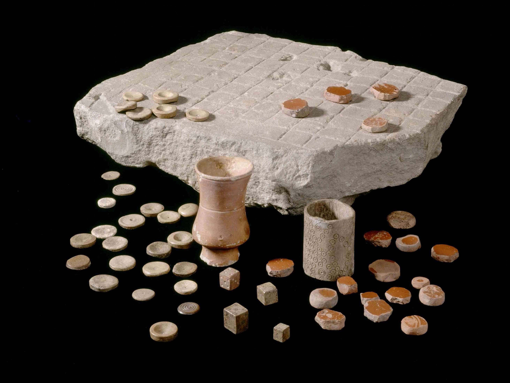
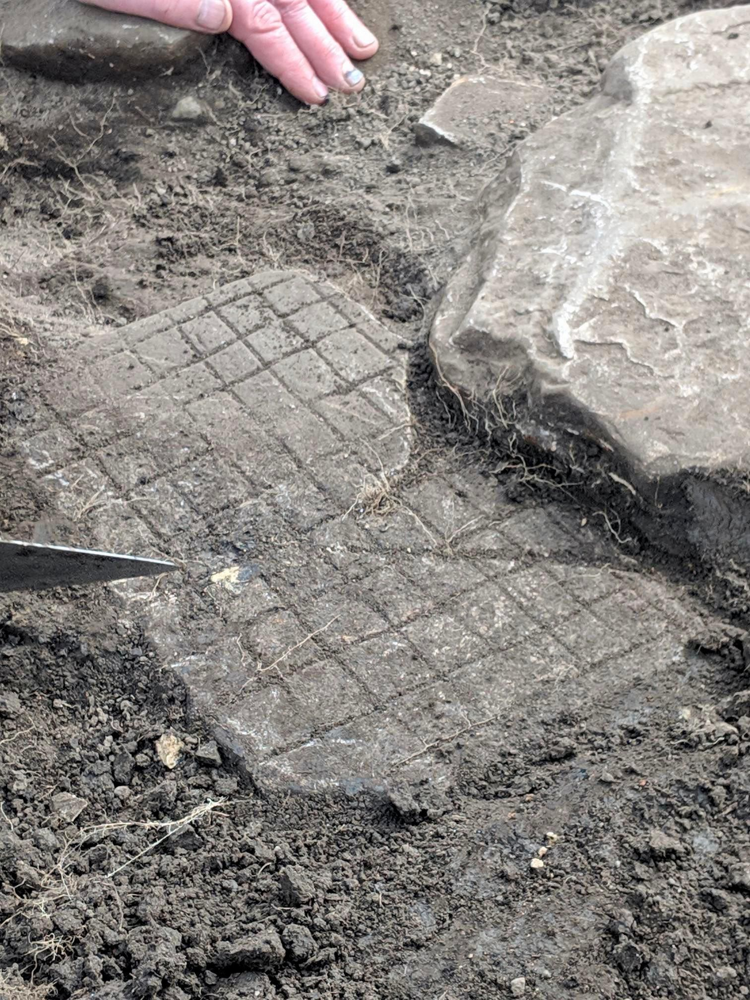
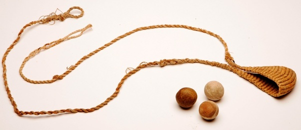
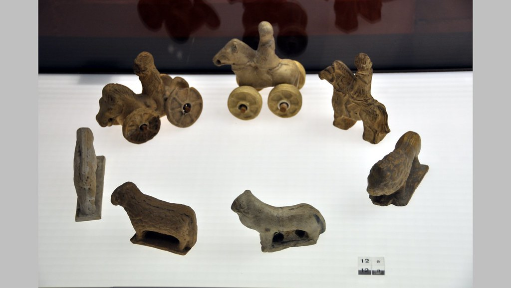
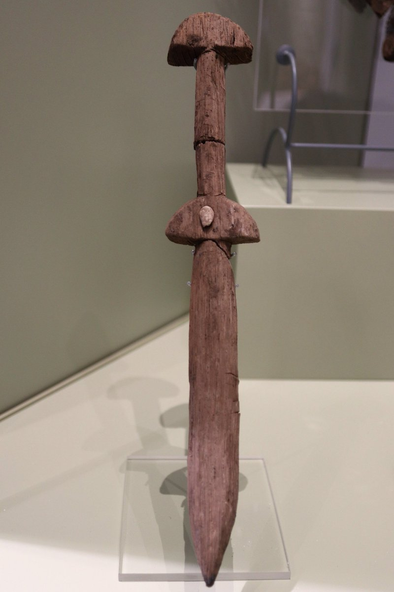

Leikir og spil
Rómverjar voru með margar leiðir til þess að drepa tímann. Ein af þessum leiðum var að spila borðspil. Rómverjar voru með nokkur borðspil sem þeir spiluðu reglulega en vinsælasta borðspilið sem þeir spiluðu heitir Ludus latrunculorum eða bara Latrunculi. Ludus latrunculorum er oft kallað rómversk skák þar sem að spilaborðinu er skipt upp í kassa eins og í skák. Rómverjar voru ekki með eina sérstaka stærð af spilaborði heldur hafa fundið margar stærðir af latrunculi borði frá 7x7 reita, upp í 24x18 reita borð og sama gildir um fjölda spilakalla.
Spilið snýst um það að fanga alla spilakallana hjá andstæðingnum með því að ná að setja sína kalla sitt hvorum megin við spilakall andstæðingsins. Spilakallana má aðeins færa áfram, afturábak og til hliðar en ekki á ská. Einnig er hægt að hoppa yfir kallana sína og andstæðingsins eins og í spilinu Damm. þegar búið er að fanga alla kalla andstæðingsins er maður búinn að vinna. Fyrstu heimildirnar um spilið Ludus latrunculorum er hægt að finna í bókinni De Lingua Latina sem var skrifuð í kringum 116-27 f.kr. Nafnið Ludus latrunculorum er hægt að þýða sem “spil málaliða”.

Rómverskir krakkar áttu mikið af leikföngum og léku sér mikið með þau. Stelpurnar léku sér frekar með dúkkur og tré fígúrur á meðan strákarnir léku sér meira að hernaðartengdu dóti eins og bogum og slöngvum. Þessar slöngvur voru eins og slangvan í sögunni um Davíð og Golíat og voru oft notaðar til þess að kenna ungu piltunum að veiða.


Strákarnir léku sér einnig með tré sverð og önnur tré vopn og börðust við hina strákana.
